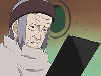
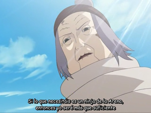

Vieja Chiyo-Na
 De: La Frikipedia, la enciclopedia extremadamente seria.
De: La Frikipedia, la enciclopedia extremadamente seria.
| De la serie Naruto y sus movidas:
|
| Vieja Chiyo-Na
|
| 
|
La Chiyo-baa mirando una foto de Deidara desnudo.
Momento en el cuál descubre las tendecias homosexuales de su nieto.
|
|
| Aldea
|
Aldea de la Arena
|
| Nivel
|
a ésta no te la pierdas de vista ni un minuto o te violará en menos que canta un gallo!
|
| Tipo de chakra
|
Super Abuelita 3000
|
| Técnica favorita
|
Pinocho No Jutsu
|
| Malo o Bueno
|
Aunque asesinó a su propio nieto por una ataque senil de homofobia repentino que le entró al pillarlo en la cueva de akatsuki montándoselo con la loca andrógina, se supone que es de los Buenos...
|
| Objetivo
|
Demostrar que los ancianos tienen más poderes y experiencia sexual de los que todos creemos
|
| Notas
|
Creadora del Pinocho no Jutsu
|
«¿Eres Sasori o una estatua viviente travesti?»
~ Vieja Chiyo-baa A punto de darle un infarto por el demacrado estado de su nieto ahora Sasorinocho
«¿Cómo pudiste hacerte gay?»
~ Vieja Chiyo-baa Regañando a golpes a Sasori por liarse con la loca andrógina
«HAHAHA, No Subestimen a una Anciana»
~ Vieja Chiyo-baa Convenciendo de que los Abuelos tambien pueden hacer sexo algo pese a su edad
«¡¡PODER ANCIANOOOOOOOOOO!!»
~ Vieja Chiyo-baa haciendo uno de sus Jutsus favoritos para seducir al contrincante de turno
Historia
Era una de las Ninjas mas destacadas de la Aldea de la Arena por su legendaria experiencia sexual y sus legendarios Ninjutsus Medicos y en sus laboratorios buscaban tener la oportunidad de volver a la vida a una Marioneta (la gran Pinocho). Despues se dieron cuenta de que tambien podía servir en humanos, pero tenía la complicación de que, quien llegara a realizar esa tecnica moria en el intento, ya que era sumamente desgastante quedar en una sola posicion por unas horas y la columna vertebral resultaba afectada por la curvatura de la espalda, tambien buscaban la receta secreta para rejuvenecer (preguntarle a la Tetunade), encontrar la inmortalidad, y poder sobrevivir entre tanta arena; por ella Sasorinocho no hubiera llegado hasta ser un Bata Floreada igual y hasta hubiera muerto (pobre niño indefenso). Se negaba a recibir ayuda de Otras Aldeas para no sentirse Inútil. Es la creadora de la Tecnica de Transferencia de Lefa Chakra o de Alma, en la cual puedes volver a la vida a alguien. Muhahahahaha mira tu futuro
Sakura, Ligate a naruto !!YA¡¡
Pero además de ser una médica, Chiyo-baa fue una artista televisiva: tenía su propio programa llamado "Las tardes Chiyo-baas" en el que hacía shows de marionetas.
Fue la llegada de los dibujos animados lo que hizo que su programa fuera levantado, pero con el dinero que le sobró y para poder sobrevivir lanzó su marca de maíz enlatado "Viejita Chiyo-baa" Envase estadounidense del maíz enlatado marca "Viejita Chiyo-baa": CRUJIENTE COMO LA ARENA DE SU ALDEA!!
Personalidad
Al principio era una anciana enojona y mala-onda traumada con su nieto Sasori, segun ella, era una de las mejores Ninjas Medico de la Aldea de la Arena, pero en realidad era una vieja mentirosa y agrandada, ya que ella era una Titiritera Profesional y le daba vergüenza decirlo adelante del chico Dattebayo y sus amigos (porque sino no iban a querer acostarse con ella).
Despues de tener sexo con Naruto, cambio de parecer pára salvarle la vida al Sr. Kazekage Emo.
La muerte de Sasori
Aún no se sabe que fue lo que pasó por su cabeza para asesinar a su propio nieto, pero se cree que por las tendencias homofóbicas de la vieja (o sea, le daba bronca que su nieto andara con la loca Art Attack).
Tambien es una verdadera incognita porque la inútil de la puta rosada logró vencer al gran Sasori, lo que si era evidente era que ésta se masturbaba pensando en él babeaba por él.
Si no hubiera estado la vieja ella ya estaría mas que muerta, (pero eso no era lo que deseaba Kishimoto para el destino de Sakura... hubiera preferido que protagonizara varias pelis porno antes de matarla).
Algo hizo Naruto con Chiyo-baa para que dejara con vida a Sakura, matara a Sasori y ademas resucitara al emo pelirrojo... ¡LE REGALO FOTOS SUYAS DESNUDO!, y la vieja se sintió tan excitada que hizo todo lo que él quería.
Tecnicas
- Transferencia de Alma No Jutsu : Le transmite su fuerza vital a quien quiera, ya que ella es tan vieja que no le hace falta. Hasta la puede usar y todo para revivir a la gente, aunque se muere ella también
agotada después de una larga e incestuosa vida con su hermano.
- Titere No Jutsu: Acecha a sus victimas con Marionetitas. La usa con el hermano pequeño de Pinocho, sacándole a sus padres para le echaran la peta y se deprimiera, pero como a Sasori
se la recomen le dan igual sus padres, saca a su marionetita chachi y se los carga.
- Chochujin: consiste en sacar Kunais y meterles Chakra para que vuelen, y controlarlos con la mente para que se le
metan por el culete claven al enemigo.
- Chiro Higi: Chuchi Chicamatsu no Chuu: Invoca de un pergamino a las 10 Marionetuchas de Monzaemon,
el primer fetichista marionetófilo conocido en la Aldea de la Arena, que en realidad son las versiones robot de una banda de Latin Kings, y las usa para darle una paliza de órdago al enemigo.
- Chanbo Kyuukai: Tres de los Latin Kings robotizados se fusionan estilo Power Rangers y se transforman en una aspiradora gigante para tragarse polvo, suciedad, enemigos... Muy útil para limpiar la casa.
- Choen: Hitomi Goku: Le conecta hilitos de Chakra a una persona para manipularla como a una marioneta y obligarla a hacer todas las perversiones que se le pasen por su mente de vieja. A Sakura le encantó la técnica.
- ¡Vengaré a mi hijo! no Jutsu: Técnica mediante la cual confunde a Mierdashi con su padre y aprovecha para darle una somanta de hostias para así vengar la muerte de su hijo, que era el único de la familia que no consideraba que había que meterla en un asilo.
- Hago todo no Jutsu : En una pelea ella termina haciedo todo.
- Poder anciano No Jutsu: : Convoca a sus amiguitos del geriátrico y le dan una
buena follada paliza al enemigo
- Reducción a ojos-vista No Jutsu: : Con una sola mirada la Vieja Chiyo-Na consigue un efecto parecido al sharingan caleidoscopio pero en gran número. Lo usa en la pelea contra Sasori, donde destruye sus 100 marionetas con él.
Autor(es):
- Khazike Khashondo
- Mierdashi
- Veni Vidi Vici
- MasterWolf59
- Sabbaku no gaara
- JoitaBandana
- Allegria
- Ireal
- Lerox
- Marijuaneiras
Frikipedia 2005-2016, Licencia
GFDL 1.2 - Extraído por FrikiLeaks